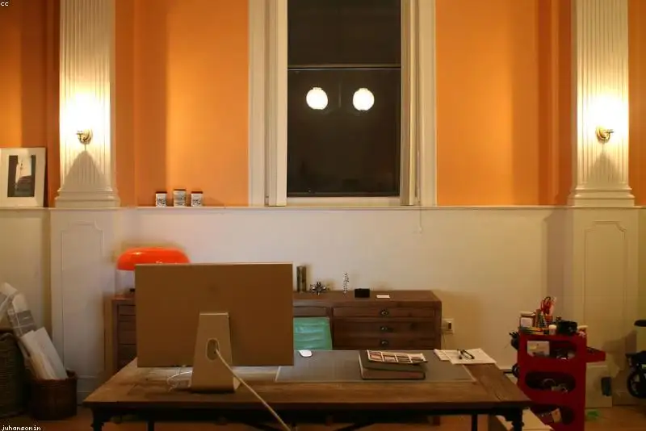

Daftar Isi
- Apa Itu Jasa Kontraktor Interior Kantor?
- Kapan Perusahaan Perlu Menggunakan Jasa Kontraktor Interior Kantor?
- Apa Saja Manfaat Menggunakan Jasa Kontraktor Berpengalaman?
- Bagaimana Cara Kerja Jasa Kontraktor Interior Kantor Custom?
- Apa Saja Faktor yang Mempengaruhi Biaya Jasa Kontraktor?
- Apa Kesalahan Umum saat Memilih Kontraktor Interior Kantor?
- Bagaimana Tips Memilih Jasa Kontraktor Interior Kantor Terpercaya?
- Furnitur Kantor Custom Apa Saja yang Paling Banyak Dibutuhkan?
- FAQ
Jasa kontraktor interior kantor custom adalah layanan desain dan pembuatan furnitur kantor sesuai kebutuhan ruang, mulai dari locker, rak arsip, hingga kabinet pantry. Layanan ini membantu perusahaan mendapatkan furnitur yang pas ukuran, kuat, dan efisien.
- Jasa kontraktor interior kantor mencakup survei ruang, desain, produksi, hingga pemasangan furnitur custom.
- Tiga kebutuhan yang paling sering diminta kantor adalah smart locker karyawan, rak lemari arsip, dan kabinet dapur pantry.
- Biaya dipengaruhi oleh material, ukuran, tingkat kesulitan desain, dan lokasi pengerjaan.
- Memilih kontraktor yang tepat mengurangi risiko furnitur cepat rusak atau tidak sesuai kapasitas beban.
- Portofolio dan garansi pengerjaan adalah dua indikator utama kredibilitas kontraktor.
Apa Itu Jasa Kontraktor Interior Kantor?
Jasa kontraktor interior kantor adalah penyedia layanan yang merancang, membuat, dan memasang furnitur serta elemen ruang kerja sesuai kebutuhan spesifik klien. Layanan ini berbeda dari toko furnitur ready stock karena setiap unit dibuat menyesuaikan ukuran dan fungsi ruang.
Secara umum, kontraktor interior kantor menangani tiga kategori pekerjaan utama: furnitur penyimpanan (locker dan lemari arsip), area servis (pantry dan kabinet dapur), serta partisi atau sekat ruang kerja. Kontraktor yang berpengalaman biasanya menawarkan survei lokasi dan gambar desain sebelum produksi dimulai, sehingga klien dapat memastikan kesesuaian ukuran lebih dahulu.
Untuk siapa layanan ini relevan? Perusahaan yang sedang merenovasi kantor, membuka cabang baru, atau membutuhkan furnitur dengan spesifikasi khusus seperti pengaman sidik jari atau kapasitas beban berat adalah pengguna utama jasa ini.
Kapan Perusahaan Perlu Menggunakan Jasa Kontraktor Interior Kantor?
Perusahaan sebaiknya menggunakan jasa kontraktor ketika kebutuhan furnitur tidak dapat dipenuhi oleh produk pasaran, misalnya ukuran ruang tidak standar atau ada kebutuhan keamanan tambahan.
Beberapa situasi umum yang mendorong perusahaan menggunakan jasa kontraktor antara lain saat pindah kantor ke gedung baru dengan denah ruang yang unik, saat volume arsip fisik terus bertambah sehingga membutuhkan rak dengan kapasitas beban tinggi, atau saat perusahaan ingin menambahkan sistem keamanan seperti pengaman sidik jari pada locker karyawan. Kebutuhan pantry kantor yang representatif untuk menerima tamu instansi juga sering menjadi alasan penggunaan jasa ini.
Apa Saja Manfaat Menggunakan Jasa Kontraktor Berpengalaman?
Manfaat utama jasa kontraktor berpengalaman adalah furnitur yang presisi dengan ukuran ruang, tahan lama karena material dan konstruksi diperhitungkan, serta hemat waktu karena satu vendor menangani seluruh proses.
Beberapa manfaat lain yang umum dirasakan klien:
- Efisiensi ruang lebih optimal karena desain menyesuaikan sudut dan dimensi ruang yang ada, bukan sebaliknya.
- Pemilihan material dan finishing dapat disesuaikan dengan anggaran, mulai dari multiplek, MDF, hingga particle board.
- Garansi pengerjaan umumnya diberikan kontraktor resmi, mencakup kerusakan struktur dalam periode tertentu.
- Konsultasi teknis, misalnya perhitungan kapasitas beban rak atau pemilihan sistem penguncian locker, dapat dilakukan sebelum produksi.
Bagaimana Cara Kerja Jasa Kontraktor Interior Kantor Custom?
Cara kerja jasa kontraktor interior kantor umumnya berjalan dalam empat tahap: konsultasi kebutuhan, survei dan pengukuran lokasi, pembuatan desain dan penawaran harga, lalu produksi dan pemasangan di lokasi klien.
Pada tahap konsultasi, klien menyampaikan kebutuhan fungsi ruang, misalnya jumlah locker yang dibutuhkan atau kapasitas arsip yang harus ditampung. Tahap survei dilakukan untuk memastikan ukuran ruang, posisi instalasi listrik jika diperlukan (misalnya untuk lampu LED atau pengaman sidik jari), serta kondisi lantai dan dinding. Setelah desain disetujui, proses produksi biasanya dilakukan di workshop kontraktor sebelum dikirim dan dipasang langsung di lokasi klien.
Apa Saja Faktor yang Mempengaruhi Biaya Jasa Kontraktor?
Biaya jasa kontraktor interior kantor dipengaruhi oleh jenis material, ukuran dan jumlah unit, tingkat kerumitan desain, serta penambahan fitur khusus seperti sistem keamanan atau pencahayaan.
Faktor-faktor yang umumnya menentukan estimasi biaya:
- Jenis material: multiplek dan kayu solid umumnya lebih mahal dibanding MDF atau particle board, tetapi lebih tahan lama untuk beban berat.
- Fitur tambahan: penguncian sidik jari, lampu LED strip, atau kaca tempered menambah biaya dibanding desain standar.
- Lokasi pengerjaan: jarak workshop ke lokasi klien memengaruhi biaya pengiriman dan pemasangan.
- Finishing: HPL, duco, atau veneer memiliki rentang harga yang berbeda tergantung tingkat kehalusan hasil akhir.
Karena variabel ini berbeda pada tiap proyek, biaya pasti sebaiknya dikonfirmasi melalui survei dan penawaran tertulis dari kontraktor, bukan estimasi umum di internet.
Apa Kesalahan Umum saat Memilih Kontraktor Interior Kantor?
Kesalahan paling umum adalah memilih kontraktor hanya berdasarkan harga termurah tanpa memeriksa portofolio, material, dan garansi pengerjaan yang ditawarkan.
Kesalahan lain yang sering terjadi:
- Tidak meminta gambar desain atau spesifikasi material secara tertulis sebelum produksi dimulai.
- Mengabaikan kapasitas beban yang dibutuhkan, misalnya untuk rak arsip berkas berat, sehingga hasil akhir cepat melendut.
- Tidak menanyakan estimasi waktu pengerjaan, yang berisiko mengganggu jadwal operasional kantor.
- Melewatkan pengecekan portofolio pengerjaan sejenis, terutama untuk kebutuhan khusus seperti pantry instansi atau locker dengan sistem keamanan.
Bagaimana Tips Memilih Jasa Kontraktor Interior Kantor Terpercaya?
Tips utama memilih kontraktor terpercaya adalah memeriksa portofolio proyek sejenis, meminta rincian material dan garansi tertulis, serta membandingkan minimal dua hingga tiga penawaran sebelum memutuskan.
Beberapa langkah praktis yang dapat dilakukan:
- Minta contoh portofolio pengerjaan yang relevan dengan kebutuhan, misalnya kabinet pantry kantor instansi atau rak arsip kapasitas berat.
- Tanyakan spesifikasi material secara detail, termasuk ketebalan papan dan jenis finishing yang digunakan.
- Pastikan ada dokumen penawaran tertulis yang mencantumkan harga, waktu pengerjaan, dan cakupan garansi.
- Diskusikan kebutuhan teknis khusus, seperti kapasitas beban rak atau sistem keamanan locker, di tahap konsultasi awal.
Furnitur Kantor Custom Apa Saja yang Paling Banyak Dibutuhkan?
Tiga kebutuhan furnitur kantor custom yang paling sering diminta adalah smart locker karyawan, rak lemari arsip untuk berkas berat, dan kabinet dapur pantry kantor.
Ketiga jenis furnitur ini memiliki pertimbangan teknis berbeda. Locker karyawan menekankan aspek keamanan dan efisiensi ruang penyimpanan pribadi. Rak arsip menekankan kapasitas beban dan daya tahan struktur terhadap berkas dalam jumlah besar. Kabinet dapur pantry kantor menekankan aspek kebersihan, tata letak, dan kesan representatif bagi tamu maupun karyawan. Pembahasan lebih rinci mengenai penataan smart locker dengan pengaman sidik jari karyawan, cara menghitung kapasitas beban rak lemari arsip berkas berat, dan kontraktor kabinet dapur pantry kantor custom Jabodetabek tersedia pada artikel terkait di bawah ini.